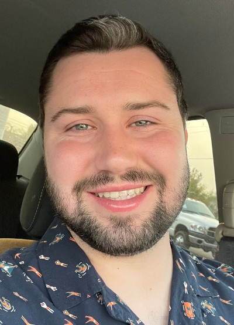

Ryan Worsham | WDD 130
Hello, my name is Ryan Worsham! I am from Georgia, USA. I have be working as a Software Quality Automation Engineer for the past five years, but would like to become an IOS developer or a web developer one day. I come from a family of five. Along with my mom and dad, I have an older sister and a younger brother. I have been happily married for almost 6 years. No kids yet for us, but my wife and I have two pet bunnies named Downey and Bucky. I grew up in Canton, Georgia and served a mission for the The Church of Jesus Christ of Latter Day Saints in Salvador Brazil. I loved the time I spent serving the people of Brazil and really enjoyed learning and speaking Portuguese. After my mission I went to Brigham Young University in Provo, Utah where I studied Computer Science before transferring to Utah Valley University to finish my Associates degree in Computer Science. Some of my hobbies include hiking, camping, and just about anything else I can do outdoors. My wife and I enjoy watching soccer together. We love going to watch Atlanta United play when we can, but when we can't we try to watch the games together on the TV at home.